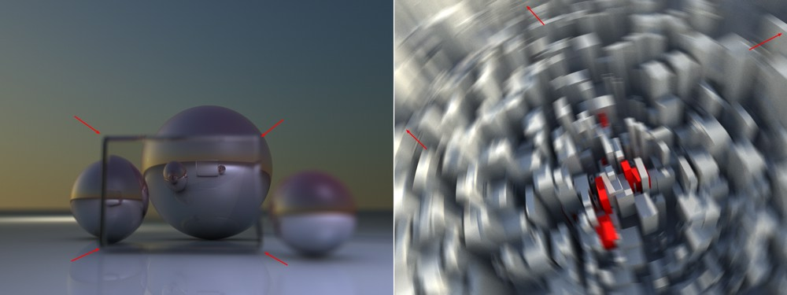

Function available in CINEMA 4D Prime, Visualize, Broadcast, Studio & BodyPaint 3D
Render Setting Basic Output Save Multi-Pass Anti-Aliasing Material Override Options Stereoscopic Team RenderBasic Properties
Basic Properties
Name
Here you can enter a name for the object.
This name will also appear in the Render menu and the Content Browser when the property is saved as a preset.
Save
Use this option to define globally if any data should be saved at all during rendering. This also applies to Multi-Pass and compositing files.
Enable Multi-Pass Rendering
Enables or disables the Multi-Pass-Rendering Cinema 4D.
Enable Stereoscopic Rendering
This is the main switch for enabling or disabling stereoscopic rendering. For details, please refer to Stereoscopic.
Material Override
See Material Override.
Renderer [-2147483648..2147483647]
Depending on the renderer you have installed, a list will be displayed that lets you define how Cinema 4D should render. What you will normally see displayed in this list is:
- Standard: The normal Cinema 4D render engine will be used.
- Software OpenGL: Renders exactly as what is displayed in the Viewport. OpenGL will be rendered using the CUP and will therefore be slower than with Hardware OpenGL. There is no visible difference between Software OpenGL and Hardware OpenGL (details can be found under Hardware OpenGL).
- Hardware OpenGL: Renders exactly as what is displayed in the Viewport. OpenGL will be rendered a maximum speed using the graphics card.
Function available in CINEMA 4D Visualize, Broadcast, Studio
Physical: A special renderer, including a Physical Camera will be used in order to render special effects such as real 3D depth of field or motion blur, etc.
Function available in CINEMA 4D Visualize, Studio
- CineMan: Use this option if you want to render using CineMan-compatible renderers (see CineMan).
Any other renderers that are installed.
Standard or Physical Renderer?
In most cases you should use the normal Cinema 4D renderer (Standard), which itself is very fast and stable.
However, if you want to correctly depict photographic effects such as those listed below, you should use the Physical Renderer.
- Rendered depth of field with corresponding blur effects
- Rendered motion blur
- Vignetting (darkening towards the image edge)
- Chromatic Aberration (color seams at edges), etc.
- When rendering multiple, combined blur effects (motion blur with depth of field, Area shadows, etc.) the Physical Renderer is faster than the Standard renderer.
Several drawbacks of the Physical Renderer, however, should not be ignored:
- The realistic simulation of physical effects requires more calculation power and more time. It does, however, offer several more settings (which offer great potential for optimization), which in particular can make very fast preview renderings possible. Many more possibilities are also offered in conjunction with the Progressive Sampler (endless rendering). More details can be found here.
- The Physical Renderer bears a number of disadvantages. For example, it does not work in conjunction with Sketch and Toon, the Cartoon Renderer post effect, Specular lights, cylindrical lens (and other post effects displayed in the selection menu); motion blur does not work in conjunction with several special elements such as PyroCluster, visible lights, object glow; furthermore, hair is rendered much slower, hair Multi-Passes cannot be rendered; finally, no hard shadows can be rendered (Area shadows will be rendered instead).
- Faulty results can be produced in conjunction with Multi-Passes and Shaders (e.g., proximal and plug-in Shaders that use their own cache) when combined with motion blur.
Several effects in the Physical Renderer have been simulated for some time now in post-production. However, much of this was done by cheating and the result never really matched the real rendered effect. This applies to the following situations, for example:

- Left: Here you see a glass cube positioned in front of several spheres. The cube itself is blurred but the reflection of the sphere behind it is in focus. If a 2D post effect had been applied in whose depth map no information about the object behind the transparency is contained, everything behind the glass cube would have been rendered out of focus (blurred).
- Right: 2D motion blur effects often have shortcomings at the edges because no information is available about objects that lie just outside the rendered region. However, this does not pose a problem for a real 3D motion blur.